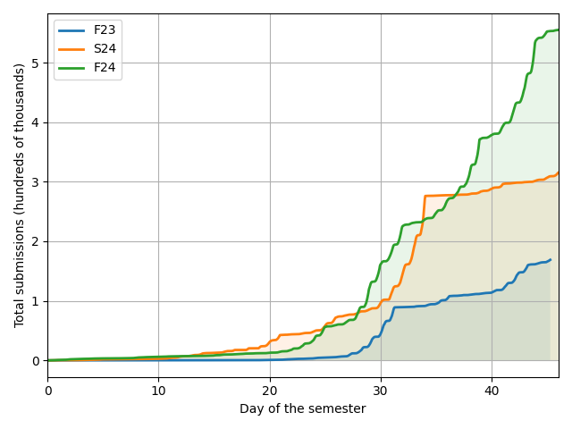

Note
Go to the end to download the full example code.
Comparing To Previous Semesters
2023-08-21 2023-10-06
F23 168874
2024-01-19 2024-03-05
S24 314912
2024-08-19 2024-10-04
F24 554902
import datetime
import matplotlib.pyplot as plt
import numpy as np
import polars as pl
import src # noqa
df = src.load_tables("Submission")
df = (
df.select("timeStarted")
.filter(pl.col("timeStarted") > pl.date(2020, 1, 1))
.sort("timeStarted")
)
start_this_fall = datetime.date(2024, 8, 19)
start_last_fall = datetime.date(2023, 8, 21)
start_last_spring = datetime.date(2024, 1, 19)
now = datetime.date.today()
total_days_this_year = now - start_this_fall
for start_date, label in [
(start_last_fall, "F23"),
(start_last_spring, "S24"),
(start_this_fall, "F24"),
]:
df2 = (
df.filter(
pl.col("timeStarted") > start_date,
pl.col("timeStarted") < start_date + total_days_this_year,
)
.group_by(
pl.col("timeStarted").dt.ordinal_day() * 24
+ pl.col("timeStarted").dt.hour()
)
.len()
.sort("timeStarted")
)
print(start_date, start_date + total_days_this_year)
time_started_full = pl.DataFrame(
{
"timeStarted": np.arange(
df2["timeStarted"][0], df2["timeStarted"][-1] + 1, dtype=np.int16
)
}
)
time_started_full = time_started_full.with_columns(
(pl.col("timeStarted") * 0).alias("len")
)
df2 = df2.join(time_started_full, on="timeStarted", how="right").drop("len_right")
df2 = df2.fill_null(0)
print(label, df2["len"].sum())
df2 = df2.with_columns(pl.col("len").cum_sum().alias("len_cum"))
x = (df2["timeStarted"] - df2["timeStarted"][0]) / 24
y = df2["len_cum"] / 1e5
plt.plot(x, y, label=label, linewidth=2)
plt.fill_between(x, 0 * y, y, alpha=0.1)
plt.ylabel("Total submissions (hundreds of thousands)")
plt.xlabel("Day of the semester")
plt.xlim([0, total_days_this_year.days])
plt.legend()
plt.grid()
plt.tight_layout()
plt.show()
Total running time of the script: (0 minutes 0.281 seconds)